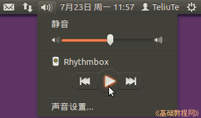

Ubuntu 入门操作指南
作者：TeliuTe 来源：基础教程网
四十、Rhythmbox 音乐播放器 返回目录 下一课双击一个音乐文件就会用 Rhythmbox 音乐播放器播放它；
1、Rhythmbox 音乐播放器
1）点击主按钮，在搜索中输入rhythmbox ，打开程序，或者依次点“主按钮、所有程序、过滤结果、媒体、Rhythmbox 音乐播放器”；
2）左侧栏是媒体库，右侧是播放的音乐文件，点右侧的“导入”按钮，可以将文件夹中的音乐导入到媒体库；
3）点上边的“播放”按钮，或者在列表的音乐文件上双击，就可以开始播放音乐，滑块在进度条上开始移动；
4）上边的控制条上有播放按钮，上一首、下一首，循环播放和随机播放按钮；
5）点桌面右上角的小喇叭音量图标，在出来的面板中，点击播放按钮，也可以启动音乐播放器，再次点击暂停；

6）播放的时候只能暂停，不能退出程序，要先点暂停音乐，然后再点关闭，或者在快速启动栏的图标上点右键，选“退出”；
本节学习了Rhythmbox 音乐播放器的基础知识，如果你成功地完成了练习，请继续学习下一课内容；
本教程由86团学校TeliuTe制作|著作权所有
基础教程网：http://teliute.org/
美丽的校园……
转载和引用本站内容，请保留版权信息和本站链接。